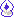

THEME
last updated: september 2026
FEATURED ART
 "* It's nothing but garbage noise." by kittehscribbles34
"* It's nothing but garbage noise." by kittehscribbles34
CHANGELOG
- september 2, 2026: updated theme switcher, added more themes.
- june 17, 2026: finally updated the archive with theories from chapters 3&4.
- june 16, 2026: music player finally done !!!! thanks to lilith.dev, i used her code as reference teehee.
- june 15, 2026: so... deltarune chapter 5 got announced 😅 yeah so i slightly changed the layout and i added a section for my own thoughts (post). still havent figured out how to code the music player zzzz
- june 4, 2026: DELTARUNE DAY!!! i decided to change the layout completely to add more stuff. you can find the old layout here.
- apr 19, 2026: added music page.
- apr 17, 2026: added lightner mode. updated graphics and links page. added changelog.
- mar 2, 2026: added graphics page.
- dec 2025: revamped theories page completely. added site button. changes to secret pages.
- nov 2025: added favorites. added extra pages.
- aug 2025: this shrine was created. previously was only the theories archive page.
MUSIC
INTRO
CHAPTER 5 IS HERE !
site launch: this used to be a shrine on my main site but i have decided to make it into its own thing. deltarune fans welcome !
intro

hi ! you can call me ben (they / she), and this is my deltarune fansite/shrine. i created this to express my love for deltarune and its fandom. feel free to look around !
* you can find me on the deltaboards, @elangel2006
* también hablo español saludenme!!
this site is responsive but looks better on desktop.
link to this site!
original
new version
CREDITS
tiled backgrounds by: kaizocore